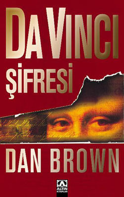

DA VINCI'NİN ŞİFRESİ - DAN BROWN
Kitabın baş kahramanı Langdon... Gece yarısında bir telefon alıyorsunuz ve bir ziyaretçiniz olduğunu söylüyor. Langdon, Melekler ve Şeytanlar olduğu gibi yine sırlar dolu bir olayı günyüzüne çıkarmak için tehlikeli ve ürpertici bir oyunun içine girer. Oldukça zeki olan baş kahramanımız Robert Langdon'ın çocukluğu hakkında sayfa otuz üç şöyle diyor, “Langdon çocukluğunda terk edilmiş bir kuyuya düşmüş ve kurtarılana kadar, o daracık alandaki suyun içinde ölümle mücadele
etmişti.” Hayatının ilk çağlarından anlaşılacağı gibi Robert Langdon gerilimler , aksiyonlarla yaşayan biri.
Da Vinci Şifresi adlı kitapta kendisine yol arkadaşlığı eden karakter Sofie Neveu, suikaste uğrayan Jacques Sauniere'nin torunu. Asıl amaç Jacques Sauniere'nin katillerini bulmak iken Robert Langdon üspertici bir suçlama ile karşı karşıya kalır. Peki nasıl kurtulacak? Sofie Neveu ile devam eden sırları çözme, sembolleri yorumlama olayına ilerleyen sayfalarda Leigh Teabing'in katılmasıyla merak seviyesi giderek katlanıyor.